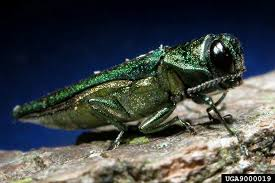

Jedds Tree Care: Emerald Ash Borer

What Emerald Ash Borer
It is an exotic insect pest from Asia.
What do they do.
The flattened, creamy white larval stage feeds below the bark and cuts off the living, water and nutrient conducting vessels causing tree death.
What trees to they go for
They eat ash trees
For more information go to the link watch a playlist of ash trees and Emerald Ash Borer or go read some more information on the other link.
Here for playlist
Here for info
Here for info